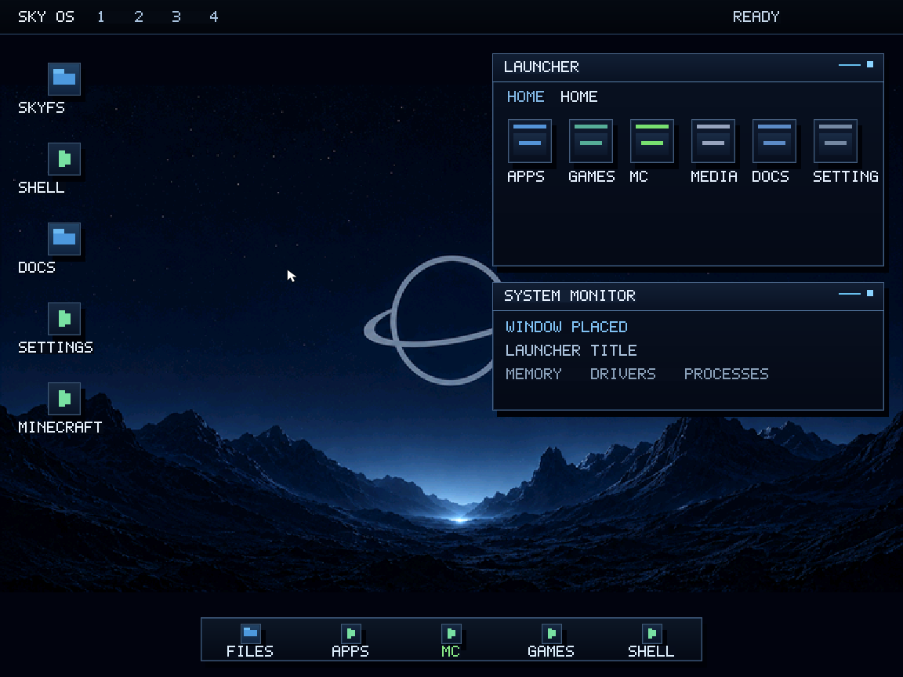

Recognizable
Files should look like files. Settings should look like settings. Users should not need a manual for every click.
Sky OS design starts with the basics people notice first: the wallpaper, icons, launcher, dock, windows, and how fast the screen makes sense.

The current look uses a night-sky mood because it fits the name without turning the whole interface into decoration. The desktop should still be readable first.
Future UI work should make the system feel smoother and more modern while keeping the project’s identity: quiet space visuals, crisp panels, simple places, and familiar controls.
Files should look like files. Settings should look like settings. Users should not need a manual for every click.
Previews should show the real system, even when the edges are rough. Fake polish ages badly.
Text, panels, and system messages matter more than decorative noise.
The design needs room for a file manager, settings, apps, games, diagnostics, and future developer tools.